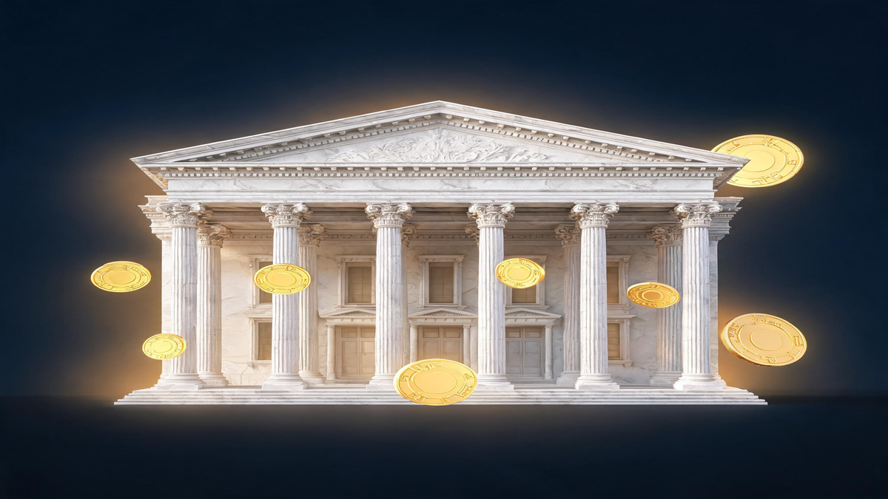

World Liberty Gets OCC Bank Charter

📑 Table of Contents
The Office of the Comptroller of the Currency has conditionally approved a national trust bank charter for World Liberty Trust Co., the banking arm of World Liberty Financial — a crypto firm 38% owned by an entity affiliated with President Donald Trump and his family. The approval, granted August 14-15, 2026, would let the Trump family's crypto venture issue stablecoins directly, rather than relying on third parties.
Senator Elizabeth Warren called it "the most brazen act of self-dealing our financial system has ever seen." World Liberty's CEO called it a step toward democratizing finance. Both descriptions capture why this charter matters.
What the OCC approved
The OCC gave World Liberty Trust Co. conditional approval to operate as a federally chartered national trust bank. A trust charter allows the institution to hold assets in trust for clients and issue payment instruments — in this case, stablecoins backed by U.S. Treasuries.
World Liberty Financial currently relies on BitGo for some stablecoin services. The charter would let it bring those functions in-house, which CEO Zach Witkoff — son of Trump's Middle East negotiator Steven Witkoff — said would enable the firm to scale its offerings. The OCC noted the application was reviewed by career staff and the bank would be supervised by nonpolitical examiners.
The approval is conditional. World Liberty Trust must complete additional steps, including raising capital, before the charter becomes fully operational. The OCC declined to comment on the approval beyond posting the letter on its website.
The OCC under Trump has received 40 bank charter applications since 2025, a sharp increase compared with the previous administration. Many are tied to crypto projects.
Why this matters for stablecoins
World Liberty's flagship product is USD1, a dollar-backed stablecoin. It is currently the fourth largest stablecoin by market capitalization, at around $4 billion. Stablecoins are cryptocurrencies pegged one-to-one to the U.S. dollar and backed by reserve assets like Treasury bills.
A bank charter would allow World Liberty to mint, custody, and redeem USD1 directly — eliminating the need for a partner like BitGo. For users, the practical difference may be minimal. For World Liberty, the revenue opportunity is significant: stablecoin issuers earn yield on their Treasury reserves while charging fees for minting and redemption.
The charter also gives World Liberty access to Federal Reserve payment systems, which could make USD1 settlements faster and cheaper — a competitive advantage over stablecoins issued through state-chartered trusts or offshore entities.
The financial stakes
World Liberty Financial says on its website that an entity affiliated with Trump and certain family members owns 38% of the company. Reuters has estimated that the Trump family earned about $50 million from the USD1 stablecoin through the end of June 2026. Overall, World Liberty Financial funneled more than $1.6 billion to the president and his family as of April 2026, according to Reuters calculations.
Those numbers make clear why this is not a routine banking approval. A sitting president's family business, which has already generated over a billion dollars in revenue from crypto, is now a step away from operating a federally chartered bank that can issue dollar-denominated payment instruments at scale.
The political backlash
Senator Warren was the most vocal critic. "President Trump is now the first President in history to approve, operate, and supervise his own bank," she said in a statement. Warren said she and colleagues would introduce legislation to prevent presidents and senior government officials from owning or controlling banks.
Some congressional Democrats have refused to support the broader crypto regulation bill, the Clarity Act, specifically because it does not impose strict limits on the president's ability to profit from crypto ventures.
The political dimension is inseparable from the financial one. The charter approval came from an agency whose leader was appointed by the president whose family directly benefits — even if career staff reviewed the application.
What happens next
World Liberty Trust must raise capital and complete the OCC's remaining conditions before the charter becomes operational. There is no public timeline for that process. Once operational, the firm could begin minting USD1 through its own banking infrastructure.
The broader question is whether Congress will act. Warren's proposed legislation faces uncertain prospects in a Republican-controlled Congress, but the charter has made the conflict of interest impossible to ignore. Even if the legislation stalls, the political scrutiny is likely to follow World Liberty for as long as the Trump family holds its stake.
Bottom line
The OCC's conditional approval of World Liberty Trust Co. is a milestone for crypto regulation — a federally chartered bank explicitly designed to issue stablecoins at scale. It is also a conflict-of-interest test case that has no modern precedent. The charter is not yet operational, and congressional pushback is already forming. But the approval itself signals that the Trump-era OCC is willing to grant crypto firms the same banking infrastructure that traditional financial institutions have long held.